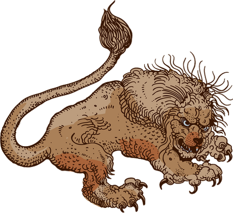

Joined Hands — Holder
Spool-drawn wards, barriers, and slows that steady the holding-circle and speed the containment Working—measured discipline with lower strain on the caster.
Set in the world of The Hook and the Skein. Hold the Scar borderlands against Vrakoni and Hooked Ones, guard the holding circles as the Rust rises, and carry your Order's discipline across every watch.

Along the Scar borderlands—Cut territory where the world's seam wears thin—a Joined-Hands holding-circle strains to seal an open breach. If the casters fall, the Working breaks.
You stand between the breach and the circle. Between waves, you lay containment wards across the approach. When the wave breaks, Hooked Ones, pack handlers, and Vrakoni war-beasts surge out of the In-Between toward the casters.
Hold the line across a 5-wave Standard Watch or a 10-wave Deep Watch until the hold-light fills and the breach shuts. Push too hard on Tension and let the rising Rust claim you—or lose the circle's integrity—and the watch is lost.
Spool-drawn wards, barriers, and slows that steady the holding-circle and speed the containment Working—measured discipline with lower strain on the caster.
Heavy Tension strikes paired with mending—capable of patching circle integrity and bleeding off built-up Rust when Vrakoni press close to the line.
Channel Spool for steady wards and slows, or lean on Tension for immediate force that pushes your strain dial higher.
Watch your strain climb from Clear through Shock, Fracture, Hooked, and Revelation-Break. Overreaching or standing too close to Vrakoni and Hooked Ones drives it upward.
Vrakoni packs are driven by Hooked-One handlers. Cut the handler down first and the command-link snaps—leaving linked beasts to collapse or turn feral.
Scarward (working title) and The Hook and the Skein™ are original game projects by Burnt Thumb Works. © 2026 Burnt Thumb Works. All rights reserved.